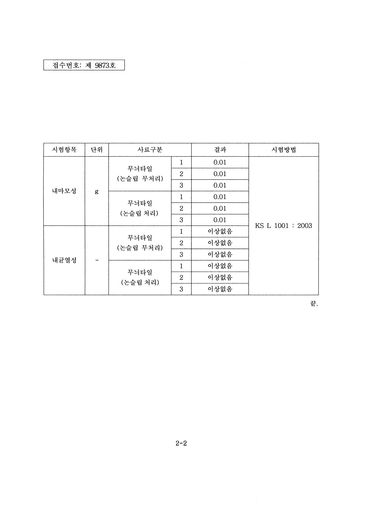

사람이 매일 사용하는 공간에 시공하는 만큼, 약제의 성분과 사용 후 마무리까지 함께 확인합니다. 닥터 논슬립은 주요 유해물질 불검출이 확인된 약제를 사용합니다.
주요 유해물질 불검출 확인
| 확인 항목 | 결과 |
|---|---|
| 폼알데하이드 | 불검출 |
| 아세트알데하이드 | 불검출 |
| 벤젠 | 불검출 |
사용 약제의 성분을 확인하고 정해진 취급 절차에 맞춰 시공합니다. 기관 제출용 성분·취급 자료가 필요한 경우 상담 과정에서 용도에 맞게 안내합니다.
성분 확인에서 끝나지 않는 현장 안전
주변 보양 금속·벽면·집기 등 약제가 닿지 않아야 할 부분을 보호합니다.
작업 구역 분리 보호구를 착용하고 환기 상태를 확인하며, 이용자의 동선과 작업 구역을 구분합니다.
반응 후 중화·세척 잔여액과 오염을 회수하고, 바닥과 주변 상태를 확인한 뒤 이용 시점을 안내합니다.
처리한 바닥재의 내마모·내균열도 확인했습니다
무늬타일을 KS L 1001:2003에 따라 시험한 결과입니다. 처리·무처리 각 3개 시료에서 마모감량은 모두 0.01g, 내균열성은 모두 이상 없음으로 확인되었습니다.
| 시험 항목 | 무처리 시료 | 처리 시료 |
|---|---|---|
| 마모감량 | 각 0.01g | 각 0.01g |
| 내균열성 | 이상 없음 | 이상 없음 |

사용하기 전과 사용한 뒤까지
현장에서는 미끄럼 변화와 색상·광택을 샘플로 먼저 확인합니다. 시공 후에는 기름·비누·세제 잔여물이 쌓이지 않도록 이용 환경에 맞게 청소하고, 바닥 상태가 달라졌다면 시공팀에 알려주세요. 약제 선택부터 시공 후 관리까지 이어서 안내합니다.